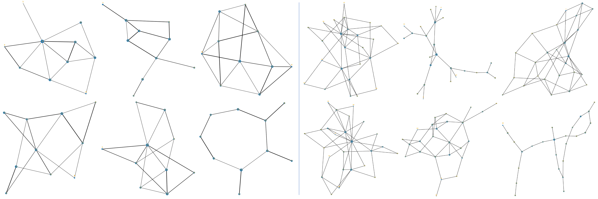
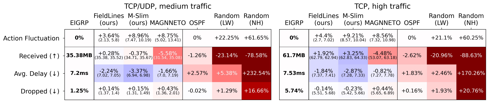
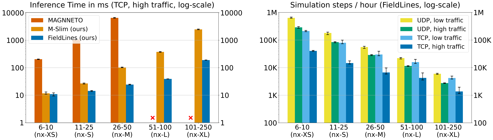

PackeRL: Training RL Agents for Routing Optimization in Versatile Network Scenarios and Packet-Level Simulation
Recent advances in Reinforcement Learning (RL) for Routing Optimization (RO) in Computer Networks have largely leveraged simulation-based environments, since covering a large variety of network situations can with real-world experiments can be prohibitively expensive. However, the choice of network model significantly impacts the generalization of learned policies to real-world scenarios. While fluid models are computationally efficient, they abstract away the packet-level dynamics that are crucial for capturing the true behavior of e.g. TCP traffic. Currently, there exists no framework for RL-powered RO approaches that offers both a realistic simulation backend, and a comprehensive toolset for training and evaluation on wide ranges of realistic network settings. Here, we present PackeRL, a framework leveraging ns-3 for packet-level simulation which supports versatile network scenarios (network topology, flow-level traffic demands and events like link failures). Our experimental results are the first to deliberately show the advantage of training in such packet-level dynamics over using fluid models.

Figure 2: Examples of 10-node (left) and 25-node (right) network topologies generated with PackeRL scenario generator.
RL Policy Designs for Dynamic Routing Optimization
Common RL-based RO approaches infer link weights that are used to compute shortest paths, or they infer next-hop decisions per routing node and traffic destination directly. While approaches of the former kind generally scale poorly with network topology size, approaches of the latter kind are more flexible but require policy adjustments or re-training when the network topology changes. In this work, we present two novel RL policy designs for dynamic RO that address these challenges: M-Slim optimizes the inference mechanism and policy architecture of MAGNNETO, a recent Graph Neural Network approach for topology-agnostic RO, to reduce inference time by one to two orders of magnitude. FieldLines is a novel next-hop policy design that re-optimizes routing for any network topology within milliseconds without requiring any re-training.

Figure 3: Example of how the learnable policies M-Slim and FieldLines obtain routing from network states. The red edges denote highly loaded data pathways, e.g. due to full packet buffers. The actor of M-Slim outputs link weights that are used to calculate routing paths. These routing paths are then broken down into individual next-hop neighbor selections per destination node and routing node to fit PackeRL's definition action space design. FieldLines uses its actor module to obtain next-hop ratings per edge and destination node, illustrated by the respective colors of the rating values, and then uses these ratings to select next-hop neighbors per destination and routing node.
Experimental Results
We evaluate the performance of M-Slim and FieldLines in a wide range of network scenarios that include very small to very large network topologies, different traffic mixes and intensities, and link failures. In a nutshell, we find that M-Slim excels at high traffic volumes and greatly reduces inference time compared to MAGNNETO. However, its shortest-paths approach still scales poorly to large network topologies. FieldLines on the other hand is able to re-optimize routing within milliseconds for any evaluated network topology and traffic situation, achieving almost the same performance as M-Slim. In any case, both algorithms outperform commonly used static baseline protocols like OSPF or EIGRP. On the other hand, MAGNNETO, which has been trained in a fluid-based environment, is not able to generalize well to the packet-level dynamics of the PackeRL environment.
Figure 4: Results on small network topologies per approach and performance metric. Cells show the mean values over 100 evaluation episodes in the first line, and min and max values across random seeds in the second line. Values are relative to EIGRP. Both our approaches outperform the shortest-path baselines in high-traffic scenarios, and the difference in performance to MAGNNETO shows that learning to route in packet-based environments is important.

Figure 5: Left side: Mean inference times per PackeRL step on different network sizes. Our policies reduce the inference time required by MAGNNETO, by multiple orders of magnitude. Right side: Simulation steps per hour, including shared memory communication but excluding inference and learning times. Simulating TCP traffic in PackeRL is more costly than UDP traffic, and simulation speed depends on traffic intensity and network scale. Yet, since PackeRL uses a shared memory pool to facilitate communication between learning loop and network simulation, it simulates several times more steps per hour than comparable packet-level simulators using messaging libraries.